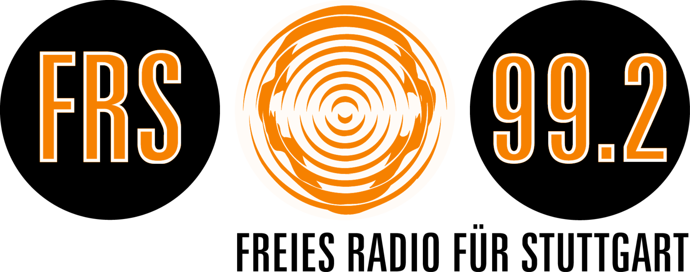

Plenum · 07.10.2026Ein einmaliges elektronisches DJ-Special für das Freie Radio Stuttgart – vorbereitet, technisch klar und als Pilot gedacht.
Elektronische Musik · Vinyl · 1990er bis heute · kuratiert statt Playlist-Automatik
Das Format ist bewusst als einmalige Sendung gedacht. Wenn es redaktionell und technisch funktioniert, kann danach entschieden werden, ob daraus mehr entsteht.
ca. 50 · elektronische Musik · Vinyl-orientiert
ca. 40 · Club- und Techno-Kontext · Vinyl
ca. 46 · elektronische Musik · Vinyl
Die technische Frage ist überschaubar und vorab testbar.
2 × Technics 1210
DJ-Mixer mit sauberem Phono-Eingang
Tonabnehmer / Nadeln oder klare Mitbringliste
30–45 Minuten Soundcheck vor Sendebeginn
Optional: Ersatzquelle / Digital-Backup für Ausfall
Einladung als Special innerhalb eines vorhandenen Formats.
Falls kein bestehendes Format redaktionell passt.
Einmalige Produktion mit technischer und redaktioneller Ansprechperson.
Im Repo liegen bereits Sendekonzept, Set-Struktur, Playlist-Manifest und ein reproduzierbarer Sendeleitfaden. Die Musikdateien bleiben lokal.
Titel in der vorbereiteten Auswahl
vorbereitete Sets
Minuten Material
Wenn diese fünf Punkte geklärt sind, kann der Pilot konkret terminiert werden.